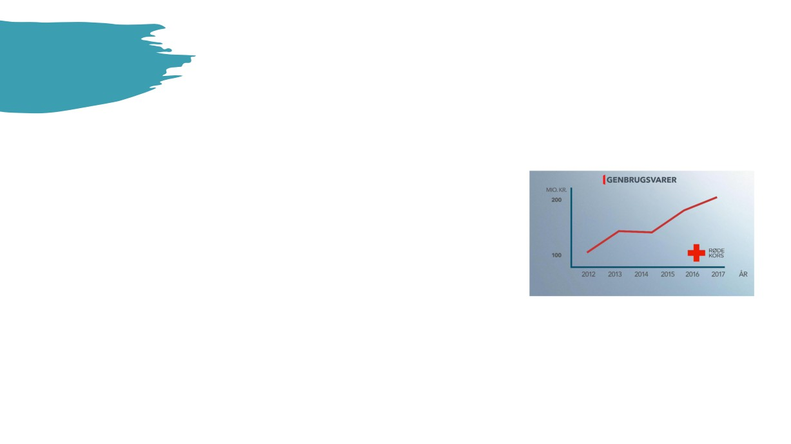
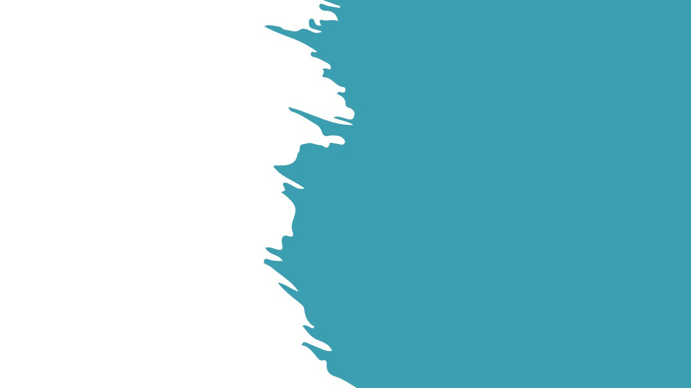
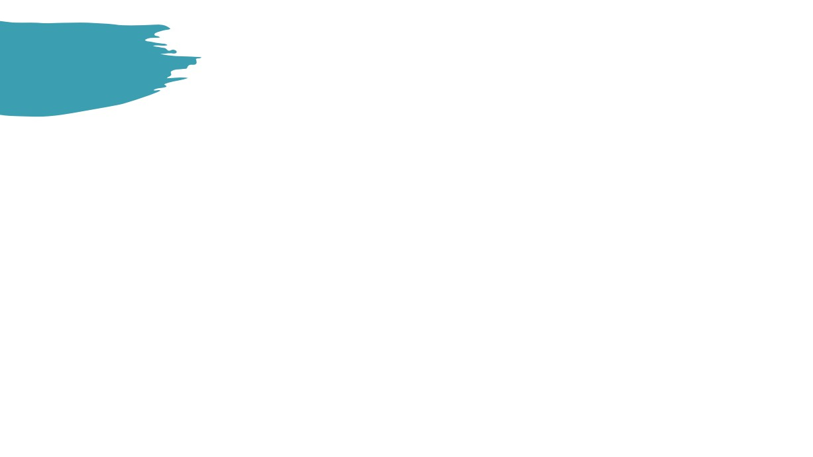
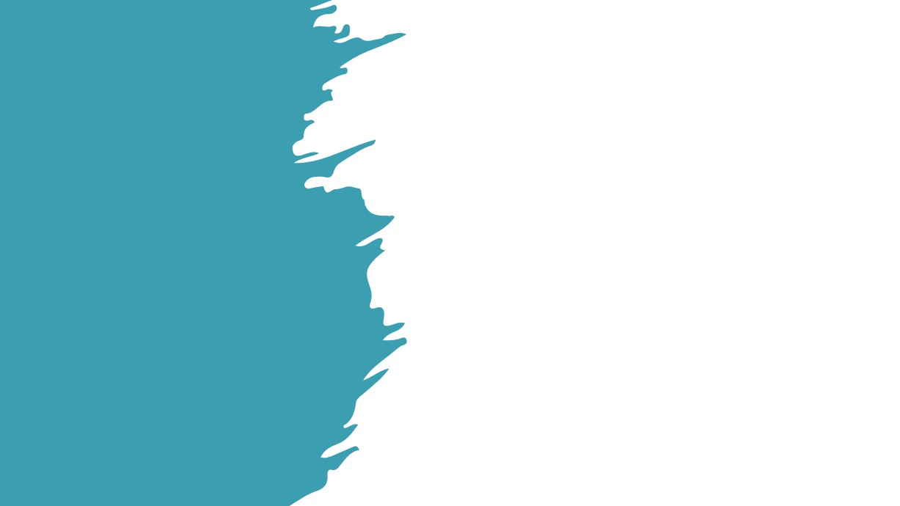
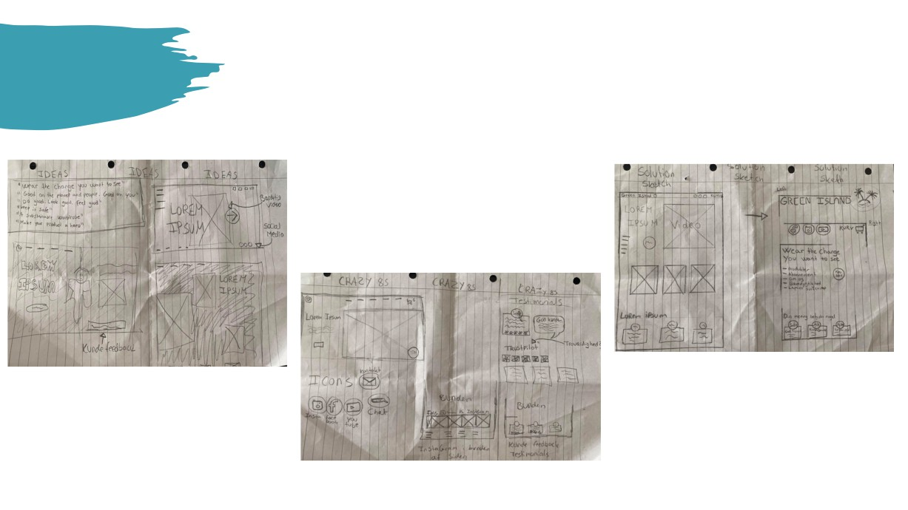

Fra UX Research til Idé
Emne for shoppen
Målgruppe
Bæredygtigt
- Min survey viste, at det er unge fra 18- 30 år der
-
T-shirtene skal laves med brug af plastik fra
handlede mest tøj online, og derfor skal de
havene.
være min målgruppe for webshoppen.
-
Derfor er der et samarbejde/hjælp fra
LaPoint surf camp, som bruger 1 time om
- Derudover fandt jeg også ud af via min survey,
dagen på at samle plastik/skrald fra de
at det var den målgruppe som ikke er blevet
strande de har deres surf camps. Det vil
oplyst nok omkring konsekvenserne, følte de
også være en billig leverandør af plastik,
selv.
da de gør det frivilligt.
-
De skal være enkle, uanset hvilken stilart
man har kan man altid bruge basic.
Feature - Abonnement
-
Skal have ét bestemt kendetegn på T-
shirten.
-
Betal et bestemt beløb om måneden.
-
Vælg de T-shirts du gerne vil have.
-
Vælg mellem at have T-shirtene i 1-3
Brugervenlighed
måneder.
-
Derefter sender man dem retur, og man kan
-
Gennem min survey, fandt jeg ud af, at
vælge nye T-shirt.
flertallet mener det er svært at finde ud af
-
Dem der bliver sendt retur bliver vasket, og
sin størrelse gennem online shopping, og
kan bruges af en nyt medlem.
de derfor fortrak fysiske butikker.
-
Færre køb af T-shirt du ikke bruger nok, Brug
af genbrug, og alligevel nye T-shirt hver
-
En hjælp til de besøgende på
måned. (Se billede omkring genbrug)
webshoppen skal være en guide med
-
Ved medlemskab modtager de en
størrelser af T-shirtene ved hjælp af mål.
bæredygtig mulepose med logo på, det
giver en god promovering, hvis de vælger at
-
Det kan give et bedre indblik i, hvordan de
bruge muleposen i
vil sidde på kunderne, og de kan selv måle
hverdagen/offentligheden.
sig derhjemme, og derefter finde ud af
hvilken størrelse de skal vælge.

Fra UX Research til Idé
Problemstillinger/USP’er ved e-handel/webshops
Unique Selling Points
Problemstillinger
Sikkerheden
Gør en god gerning
-
Nemmere misbrug af betalingskort og personlig
- Vær med til at fjerne plastik fra verdens have/strande.
oplysninger på nettet.
Pakker forsvarligt
Prisforskel
- Vi bruger vores overskydende plastik til vores
-
Højere priser i Danske virksomheden end udlandet.
forsendelser, så vores vare også er pakket
-
Udenlandske virksomheder er mere tiltrækkende
bæredygtigt.
for kunder, trods længere leveringstid
Danmark vs. Udlandet
Gratis returret
-
Antallet af danskere der handler på udenlandske
- Ved medlemskab af vores abonnement, er der fri
webshops er ca. dobbelt så stort, som antallet af
returnering af vores T-shirts.
danske webshops der sælger til udlandet
God kundeservice
- Vi er online på vores chat døgnet rundt.
- Telefontid fra kl. 8-16 mandag-fredag.

Fra UX Research til Idé
Databehandling af indsigter
Jeg nævnte derfor der var en ”prøv først, betal senere” funktion hos
Mange af dem der deltog i undersøgelsen er vilde med online shopping,
mange af de online webshops. Det gør, at man kan bestille først, og
men de foretrækker dog stadig de fysiske butikker, når det de stilles
derefter få trukket penge for det tøj du valgte at beholde. Den funktion
overfor et ultimatum mellem online og fysiske butikker. Alligevel var der
er ikke blevet oplyst for mange, og derfor bliver den ikke overvejet som
ingen i min survey der aldrig handlede.
en mulighed.
Flertallet handlede 1 gang om måneden eller hver 3. måned, hvilket jeg
Det gør den blandt andet ikke pga. Usikkerheden som mange har
mener er ret meget i forhold til, at mange af dem foretrækker fysiske
overfor nettet. Misbrug af kort, personlige oplysninger osv. De stemplede
butikker.
hurtigt den funktion som noget snyd, eller noget der er ”for godt til at
være sandt”, eller ”så nemt kan det ikke være online”.
Gennem mit interview research fik jeg en stor indsigt i, at grunden til
mange ikke handlede online, var blandt andet fordi det var for
Til sidst kom vi frem til en konklusion, at alle godt vidste, at online
besværligt med størrelserne, mente de. Det var simpelhent mere
shopping kun går fremad, og at det fortsat vil stige fra år til år.
overkommeligt, at gå ned i en fysisk butik, prøve trøjen, og derefter tage
stilling til om man skulle købe den eller ikke.
Der er mange der er bange for nogen butikker vil komme ud for at skulle
lukke, fordi de ikke har været med på bølgen, og været klar til at omstille
Hvor de mente at ved onlinehandel bestiller man den, prøver den, og
deres virksomhed på, at skulle fungere online.
derefter er det processen med returen der er problemet. Ventetiden,
For flere virksomheder er det for sent.
portoen, tiden fra pengene bliver overført tilbage på kontoen osv.

Lightning Demos
Liste
3 eksempler
Shop feature
Billeder
- Tydelig ”køb her” knap på forsiden, så
-
360 graders billeder af produktet, så
• Ikoner til de sociale medier.
brugeren ikke er i tvivl om, hvor de skal
brugerne kan se alle vinkler og ikke kun
trykke for at se udvalget.
en vinkel
Mener det er vigtigt at være med på de
sociale medier, og lave markedsføring
Language
gennem der.
- En feature så brugeren kan vælge hvilket
Video af model
sprog hjemmesiden skal være på. Kan
- En kort video af modellen med produktet
• Bed om feedback fra kunderne.
skabe mere salg fra udlandet, hvis
på, så brugeren kan få et indblik i
Et talerør fra kunderne til os, skaber
sproget ikke kun er på dansk.
hvordan trøjen falder på kroppen.
troværdighed på hjemmesiden.
Video
• Lave en produktionsvideo til websiden
- En video der viser produktionen, og hvor
Produkt tekster
Jeg synes det er vigtig ikke kun at skrive
der vises hvor materialerne kommer fra,
- Tekster til produkterne der har fokus på
man er bæredygtig, og at man på papiret
og hvordan de bliver til det produkt
brugerne behov frem for produkt
gør noget godt for jorden, man skal også
brugerne køber.
egenskaber.
kunne bevise det overfor kunderne. Blandt
- Det giver kunden et indblik i
- USP’er (hvorfor er denne T-shirt bedre for
andet med en introduktionsvideo om
bæredygtigheden, og troværdigheden
dig end andre T-shirts?)
brandet/produkterne.
for produktet.
-
Ikoner
Feedback
-
”Ikoner” til sociale medier, så brugerne
- Bed om feedback fra kunder efter køb
hurtigt kan komme ind og følge os lidt
på kvitteringssiden.
tættere på.
- Man kunne lave en survey, og finde ud af
- Brugerne får vores nyheder direkte på
om brugerne læser deres
deres sociale medier i hverdagen, uden
kvittering/kvitteringssiden igennem
de ligger mærke til det, ved at følge
brandet.

Sketch
Ideas
Solution sketch
Crazy 8s